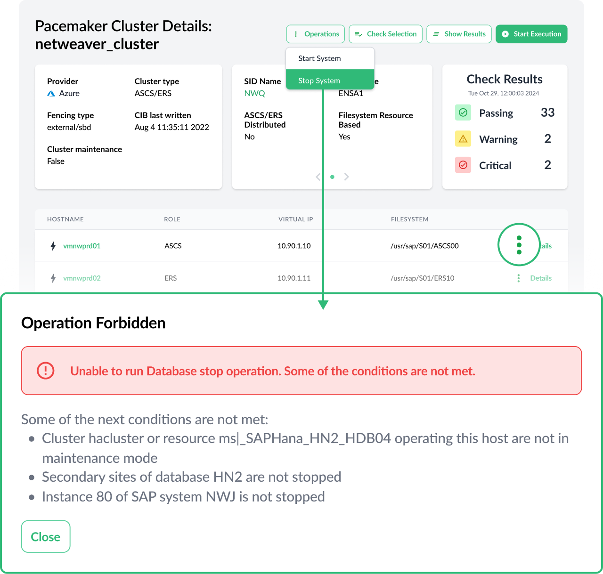
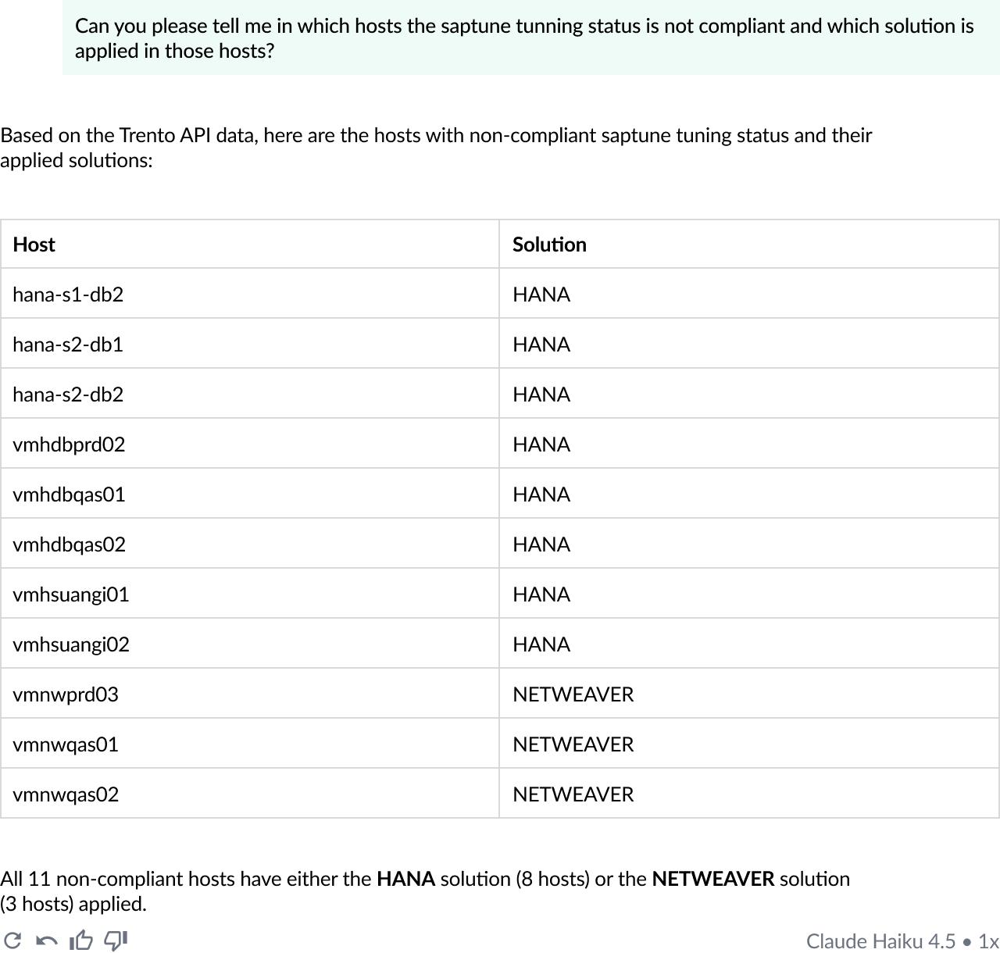
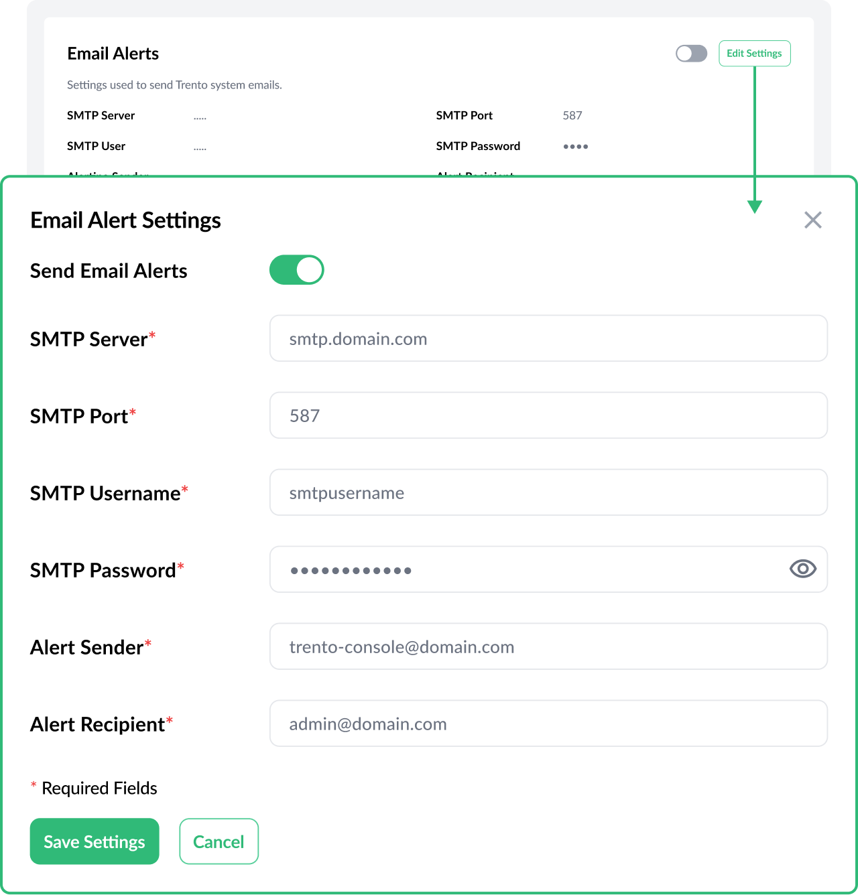
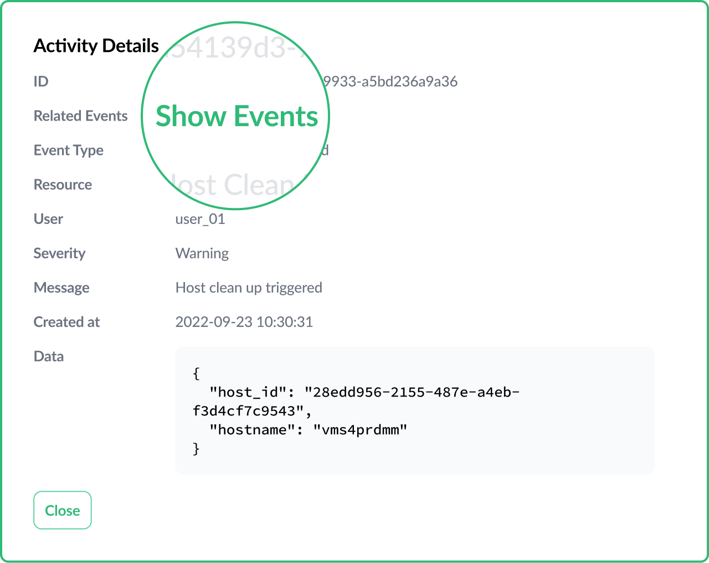
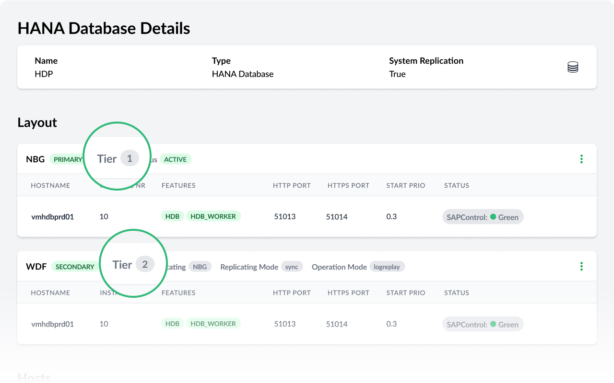

All Tags
Version 3.0 marks a milestone in the development of Trento by extending the application scope to automation with a first set of operation use cases, and beginning to explore the potential of AI with MCP integration.
Version 3.0 comes with a set of operations that will allow users to prepare their clusters for offline maintenance. This first set of operations includes host operations (saptune apply, saptune change, reboot), cluster operations (turn maintenance on/off, enable/disable pacemaker service at boot, node stop/start), HANA operations (stop/start database) and SAP operations (stop/start SAP instance, stop/start SAP system). Operations in Trento are ruled by four principles:

Trento 3.0 includes a new component, the Trento MCP Server, which directly connects your enterprise LLM to the deep, real-time observability of the Trento platform, transforming your AI into an expert for your most critical SAP landscapes. It leverages Trento’s powerful discovery engine to provide a live, detailed inventory of your entire SAP infrastructure—including HANA databases, application servers, and complex Pacemaker high-availability (HA) clusters. By securely exposing Trento’s continuous health checks and SUSE best-practice validations via the Model Context Protocol, you empower your LLM to move beyond generic advice. Your AI can now instantly diagnose real-world misconfigurations, understand complex HA cluster statuses, and generate actionable remediation plans based on the actual, live state of your production SAP systems.

Trento 3.0 continues to strengthen the core and the capabilities around observability and compliance:



Follow the instructions in our documentation to get started.